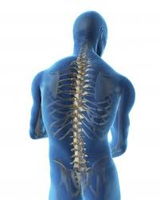

कशेरुक दण्ड

कशेरुक दण्ड अधिकांश जीव जंतुओं के शरीर का आवश्यक अंग हैं। इस लेख में मानव शरीर से संबंधित उल्लेख है। कशेरुक दण्ड हमारी पीठ की मध्य रेखा में सिर से धड़ के निचले सिरे तक फैली अस्थीय संरचना होती है जो पुरुषों में लगभग 71 सेमी. तथा स्त्रियों में लगभग 61 सेमी. लम्बी होती है। यह प्रायः पीठ की त्वचा से ढ़की सतह पर उभरी हुई दिखाई देती है। इसे मेरुदण्ड या रीढ़ की हड्डी भी कहते हैं। कशेरुक दण्ड पर हमारा सिर सधा रहता है। इसी में मेरुरज्जु या सुषुम्ना सुरक्षित बन्द रहता है। यह पसलियों को जुड़ने के लिए स्थान तथा पादों की मेखलाओं को सहारा देता है। इसी से पीठ की पेशियाँ जुड़ी रहती हैं, जिसके कारण हम अपने धड़ को आवश्यकतानुसार आगे–पीछे या पार्श्वों में कुछ सीमा तक झुका और घुमा सकते हैं।
सरंचना
कशेरुक दण्ड एक दूसरी के पीछे जुड़ी हुई 26 (शिशुओं में 33) छोटी–छोटी अस्थियों की बनी हैं, जिन्हें कशेरुकाएँ कहते हैं इनका वितरण निम्नवत होता है:-
सभी निकटवर्ती कशेरुकाओं के बीच–बीच में चपटी अन्तरकशेरुक गद्दियाँ होती है। इनका केन्द्रीय भाग कोमल लचीला उपास्थि का तथा परिधीय भाग तन्तुमय उपास्थि का बना होता है। केन्द्रीय भाग को मज्जी केन्द्रक कहते हैं। गद्दियों के कारण कशेरुक दण्ड पर्याप्त लचीला होता है और बाहरी आघातों को भी सोख लेता है।
झुकाव
सीधे खड़ा होने पर भी कशेरुक दण्ड पूर्णतः सीधी स्थिति में नहीं होता है। पार्श्वों से देखने पर इसमें चार झुकाव दिखाई देते हैं। ये ऊपर से नीचे की ओर क्रमशः ग्रीवा, वक्षीय, कटि तथा त्रिक झुकाव या मोड़ होते हैं ये झुकाव कशेरुक दण्ड को दृढ़ता प्रदान करते हैं, खड़े रहने, चलने फिरने और दौड़ने में शारीरिक सन्तुलन बनाए रखते हैं, झटकों से रक्षा करते हैं तथा इस टूटने से बचाते हैं।
प्रारूपी संरचना
प्रथम दो तथा अन्तिम नौ को छोड़कर सभी कशेरुकाओं की आकृति लगभग समान तथा नगदार अँगूठी के समान होती है। प्रत्येक कशेरुका तीन मुख्य भागों में विभेदित होती है:-
- कशेरुक काय
- तन्त्रिकीय चाप
- सन्धायी प्रबर्ध
कशेरुक काय
यह अँगूठी के समान ठोस एवं मोटा होता है तथा कशेरुका के अग्र भाग का निर्माण करता है।
तन्त्रिकीय चाप
सेन्ट्रम पर पीछे की ओर एक कशेरुकीय या तन्त्रिकीय होती है। तन्त्रिकीय चाप से घिरे हुए स्थान को कशेरुक रन्ध्र कहते हैं। सभी कशेरुकाओं के ये रन्ध्र मिलकर कशेरुक दण्ड की कशेरुकीय या तन्त्रिकीय नाल बनाते हैं। इसमें मेरुरज्जु या सुषुम्ना सुरक्षित बन्द रहता है। तन्त्रिकीय चाप की प्रत्येक भुजा दो भागों में विभेदित होती है—
वृन्त
यह तन्त्रिकीय चाप की भुजा का सेन्ट्रम से जुड़ा छोटा एवं मोटा भाग होता है। निकटवर्ती कशेरुकाओं के वृन्तों के बीच दोनों ओर एक-एक अन्तरकोशिक छिद्र होता है। इस छिद्र में से होकर मेरुतन्त्रिका तन्त्रिकीय नाल से बाहर निकलती है।
फलक
यह तन्त्रिकीय चाप की भुजा का पिछला, चपटा और पत्ती सदृश भाग होता है। यह दूसरी ओर के फलक से जुड़कर तन्त्रिकीय चाप का पश्च भाग बनाता है, जिसे कंटिकीय प्रवर्ध कहते हैं।
सन्धायी प्रवर्ध
तन्त्रिकीय चाप से सात प्रवर्ध निकले होते हैं। वृन्त तथा फलक के मिलन स्थलों से दोनों ओर एक-एक अनुप्रस्थ प्रवर्ध निकले होते हैं। फलकों के मिलन स्थल से एक कंटिकीय प्रवर्ध पीछे की ओर तिरछा नीचे की ओर झुका होता है। इन तीन प्रवर्धों से पेशियाँ जुड़ी रहती हैं। वृन्तों एवं फलकों के मिलन स्थलों से दोनों ओर दो प्रकार के सन्धायी प्रवर्ध निकले होते हैं:-
उच्च सन्धायी प्रवर्ध - ये छोटे और संख्या में दो होते हैं और ऊपर की ओर निकले होते हैं।
निम्न सन्धायी प्रवर्ध - ये भी संख्या में दो होते हैं और ये नीचे की ओर निकले होते हैं।
ऊपर नीचे की कशेरुकाओं के ये प्रवर्ध परस्पर सन्धित होते हैं। इनके चपटे सन्धि स्थलों को सन्धिफलिकाएँ कहते हैं।
शीर्षधरा
कशेरुक दण्ड की प्रथम कशेरुका को एटलस या शीर्षधरा कहते हैं। यह खोपड़ी के लिए आधार का कार्य करती है। इसके अगले सिरे पर दो गोल गड्डे होते हैं, जिसमें खोपड़ी के दोनों पश्च उभार स्थित होते हैं। इसी प्रकार प्रथम ग्रीवा कशेरुका जिसे अक्षीय कशेरुका कहते हैं, खोपड़ी में इस प्रकार स्थित होती है कि खोपड़ी को सरलता से घुमाया जा सकता है।
कार्य
कशेरुक दण्ड मनुष्य के शरीर के लिए निम्न कार्य करता है:-
- कशेरुक दण्ड में झुकाव होने के कारण इसमें विस्तारण तथा संकुचन की क्षमता होती है, जिससे मनुष्य सिर या कन्धों पर भारी बोझ आसानी से ढो सकता है।
- कशेरुक दण्ड के कारण वक्ष तथा उदर के अंगों को सुरक्षा प्राप्त होती है।
- कशेरुक दण्ड से मानव खोपड़ी जुड़ी रहती है।
- वक्ष प्रदेश की कशेरुकाओं से पसलियाँ जुड़कर वक्ष का पिंजर बनाती हैं।